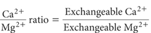

The concentration of an individual exchangeable base relative to another exchangeable base may affect plant nutrient availability and uptake. Ion antagonisms are thought to be accentuated when wide differences in concentrations occur in the same soil, such as between Mg2+ and K+ or Ca2+ and Mg2+. For example, it has been suggested that Mg deficiency is more likely when the Ca/Mg ratio exceeds 4–6 and/or when the Mg/K ratio drops below 2.0–2.5 (Metson 1974; Rayment 1983).
Kopittke and Menzies (2007) have reviewed literature on basic cation saturation ratios and concluded the data do not support claims of an ‘ideal’ mineral balancing ratio of approximately 65% Ca, 10% Mg, and 5% K. Nevertheless, many soil testing services base their recommendations on the need for basic cations on the ‘ideal’, rather than on the ‘sufficiency level concept’ that typically is more conservative on nutrient inputs.
The method provides a general description for the calculation of cation ratios, which include Ca2+/Mg2+, Mg2+/K+, Na+/K+, etc. The convention is that all ratios involving the exchangeable bases should be calculated on a chemically equivalent basis, involve the same soil extraction procedure, all expressed on the same soil moisture status.

where both exchangeable Ca2+ and Mg2+ are from the same method and expressed as cmolc/kg soil on the same soil moisture basis.
Calculate other cation ratios in a similar manner.
Report the specified cation ratio, noting the method used for exchangeable bases.